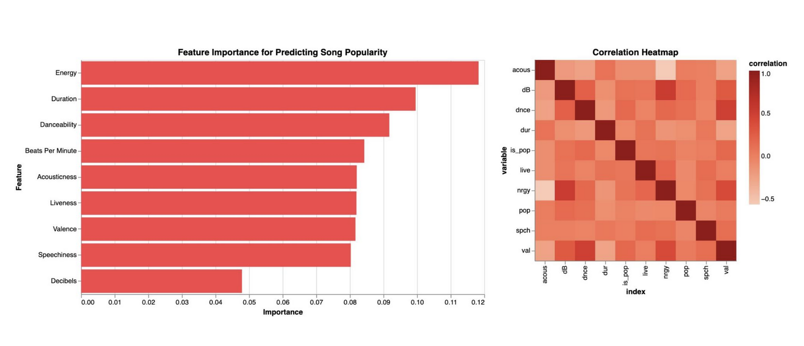

My Projects
This page showcases a collection of my data science and machine learning projects. Each project demonstrates different skills and techniques used in data analysis, visualization, and predictive modeling.
Career Skills Analysis
An in-depth analysis of career data, comparing academic curriculum with job market demands.

Greenhouse Emissions Visualization
Data visualization and exploration of greenhouse emissions and other pollutants.

CNN + SVM Classification
Image classification comparing convolutional neural networks with SVM models.

Beats and Bytes: Song Popularity Analysis
Analysis of Spotify data to determine factors that contribute to song popularity.
Credit Card Fraud Classification
Machine learning models to detect credit card fraud using KNN and SVM approaches.

Visit my GitHub!
Want to interact with my code and see more projects? Visit my GitHub repository.